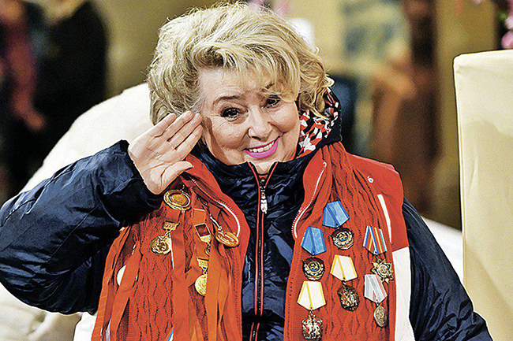
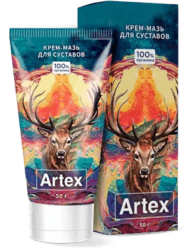
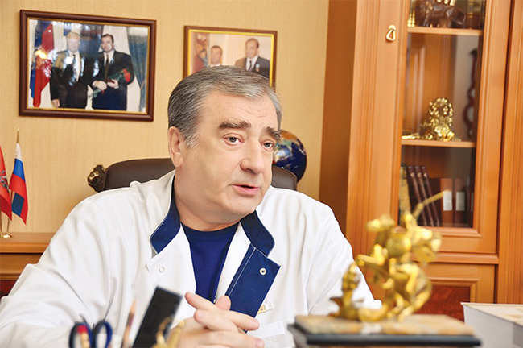
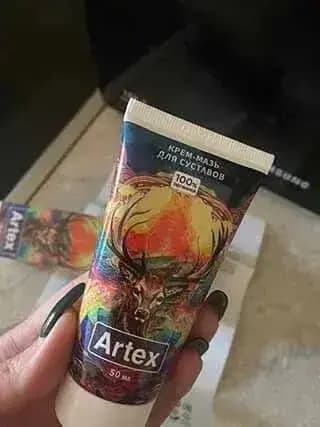
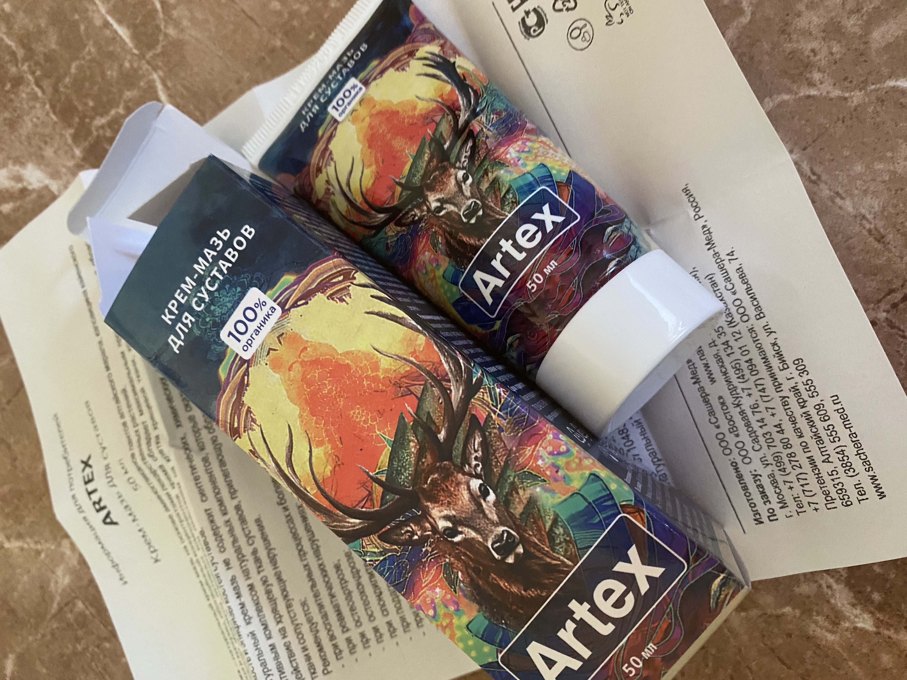
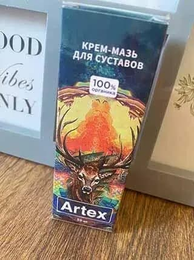
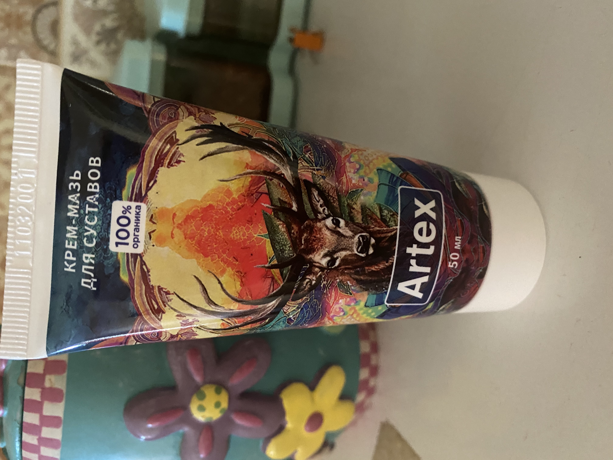

75-летний тренер российских фигуристов Татьяна Тарасова поделилась секретами здоровых суставов и рассказала почему не пользуется мазями и препаратами, которые продаются в аптеках
Татьяна Тарасова – тренер российских фигуристов в 2023 году отметила свой 75 день рождения. В начале осени в интервью в программе «Вести» она выступила с резкой критикой препаратов, представленных в аптечных сетях.
Мало кто знает, что Татьяна не только тренирует своих подопечных (которые неоднократно становились призерами олимпиад), но и лечит их суставы – на которые у фигуристов приходятся самые тяжелые нагрузки.
Татьяна Тарасова любит произносить фразу: «95% успеха в фигурном катании зависит от гибкости, подвижности и крепкости суставов».
Татьяна Тарасова согласилась дать нашему изданию эксклюзивное интервью. Она не только рассказала о способах восстановления здоровья суставов, но и вновь пожаловалась на низкую эффективность аптечных мазей.
 Скажите, как можно вылечить суставы обычному человеку, если в аптеках нормальных лекарств просто нет! И так по всей стране!- Татьяна Анатольевна, все мы видим красоту фигурного катания, когда смотрим его по телевизору, и искренне радуемся победам наших фигуристов. Но ведь за всем этим стоит тяжелый труд и сильнейшие нагрузки, в том числе на суставы. Так ли это? И как нашим фигуристам удается поддерживать суставы здоровыми?
- Да, это действительно так. Любой сустав имеет свойство стареть и стираться – хрящевая ткань не бесконечна – она со временем просто-напросто заканчивается. Так вот, у фигуристов, особенно олимпийских, которые целыми днями проводят на тренировках, суставы стираются в 7-8 раз быстрее. Это установили ученые.
Фигурист, который не может быть уверен в своих суставах, не фигурист! Ведь малейшие проблемы во время выступления – это крах всей жизни, самая низкая оценка из возможных, а спортсмен к выступлениям может готовиться годами. Именно поэтому я и моя команда тщательно следим за здоровьем суставов своих подопечных. Это наша работа.
- Когда у нас болят суставы, мы, как правило, идем за лекарствами в ближайшую аптеку. Выбор препаратов для лечения суставов сегодня на прилавках огромный. Скажите, вы тоже покупаете мази в аптеках? Наверное, знаете о них все. В одном из своих интервью вы сказали, что в аптеках нет нормальных препаратов. Так ли это?
- Ну, во-первых, мы не покупаем препараты, нам их выделяет государство. В России есть специальная клиника для олимпийских спортсменов, естественно, мы в ней лечимся и проходим необходимые обследования.
Но если говорить начистоту, то я действительно хорошо знакома со многими препаратами для лечения суставов. И по работе, и сама покупала – ведь я тоже бывшая фигуристка. И скажу вам. Это тихий ужас, что сегодня продается в аптеках. Такими препаратами лечиться нельзя!
Сегодня очень часто по телевизору говорят про аптечный беспредел. Так вот, это соответствует правде. Не знаю, как в других областях, но в области лечения суставов точно! Вместо нормальных препаратов, которые сегодня есть и с помощью которых можно восстановить суставы полностью, продают, простите меня за резкость, какую-то херню. Это не лекарства, это мусор! Причем продают его за бешенные деньги.
Даже дорогими препаратами невозможно вылечить суставы, не то, что дешевыми. И с этим кошмаром никто ничего делает.
- Чем сегодня лечат суставы фигуристы?
- По сути тем же, что и в Советском Союзе. Еще когда я была сама фигуристкой, наши ученые изобрели просто замечательный препарат. После его изобретения наша сборная после 10-ти лет «простоя» произвела фурор на Чемпионате мира по фигурному катанию, проходившему в 1988 году. И это во многом благодаря тому, что этот препарат укрепил суставы спортсменов. Я сама его применяла. Он просто давал поразительный эффект.
Этот препарат мы используем и до сих пор. Точнее, его улучшенную за годы версию. Ничего лучше ученые больше не придумали. В советские годы он считался экспериментальным и секретным, поэтому назывался ПДС-109, сейчас он называется Artex. И сейчас он доступен всем.
С помощью него можно восстанавливать даже сильно разрушенные суставы (его использует вся сборная после выступлений), а также лечить суставы, которые начали разрушаться и стираться из-за старости – я сама лично проходила несколько курсов лечения этим препаратом и каждый раз суставы становились почти как новые.
Таких препаратов не продают в аптеках. А почему? Потому что наглым аптекарям невыгодно, чтобы люди становились здоровыми – им выгоднее, чтобы они оставались больным, вновь и вновь приходили за лекарством.
Что представляет собой Artex и где его можно недорого купить?
Этот вопрос мы решили задать главному врачу олимпийской сборной по фигурному катанию РФ, врачу высшей категории, профессору, заведующего отделением спортивной и балетной травмы ЦИТО Орлецкому Анатолию Корнеевичу.
 «Если вам говорят, что суставы нельзя восстановить, не верьте! Это ложь! Суставы хорошо восстанавливаются даже в преклонном возрасте – способность к восстановлению заложена в них природой!»- Юрий Константинович, не могли бы вы рассказать, как работает Artex и за счет чего он позволяет восстановить суставы?
- Смотрите, постараюсь рассказать на пальцах. СУСТАВЫ ОЧЕНЬ БЫСТРО И ПРОСТО ВОССТАНАВЛИВАЮТСЯ. Это заложено в них природой. Все, что необходимо - чтобы организм сам запустил процесс восстановления суставов.
При частых физических нагрузках и с возрастом кровоснабжение и питание суставной сумки ухудшается, резко сокращается, в результате хрящевая ткань теряет свою эластичность, быстро пересыхает и трескается. Из-за этого сначала появляется хруст в суставах, а потом боль, отеки, а если попадает инфекция, появляется артрит, артроз или другие заболевания.
То есть "ноги растут" из проблем в суставной сумке и кровеносных сосудах прилегающей кости. Что сделали советские ученые? Они разработали препарат с максимальной проникающей способностью в суставную сумку, благодаря нему суставы и хрящи получают весь необходимый комплекс компонентов.
- Что же такого есть в составе Artex? Почему он так хорошо восстанавливает даже изношенные суставы?
- Ну, во-первых, там есть экстракт пантов алтайского марала. Фишка пантов марала в их уникальной возможности разжижать и выводить солевые отложения. Они моментально делают солевые «залежи» в суставах более рыхлыми, а после 15-19 дней регулярного использования полностью растворяют соли в суставах и позвоночнике. Согласитесь, очень полезное свойство.
В Artex есть и легкоусвояемый калий, и витамин D, и несколько других элементов,
которые способствуют ускоренному восстановлению для суставов. Поэтому лучше принимать
этот комплекс, если у вас больные суставы, и вы хотите их оздоровить.
Во-вторых, ученые добавили в него вытяжки из редких лекарственных растений в активной неизмененной природной форме. То есть никакой синтетики и химии!
Список заболеваний суставов, при которых помогает Artex:
- Артроз
- Артрит
- Артралгия
- Бурсит
- Гигрома
- Остеопороз
- Остеохондроз
- Периартрит
- Синовит
- Ревматизм
- Болезнь Рейтера
- Болезнь Стилла
- Болезнь Бехтерева
- Синдром Фелти
- Этот препарат доступен только для профессиональных спортсменов или его могут приобрести и обычные люди?
- Уже больше года он стал доступен всем. Производитель (Московский НИИ Ревматологи им. Насонова) по заданию нашего правительства создал специальный розыгрыш, приняв участие в котором можно получить скидку вплоть до 100%! Доставка препарата осуществляется в любую точку страны обычной почтой.
- Принять участие в розыгрыше, получить скидку и заполнить заявку в появившейся форме
- После этого вам перезвонит менеджер для уточнения адреса доставки
- Через 4-7 дней (необходимых на доставку) нужно будет прийти на почту и получить Artex
- Юрий Константинович, большое спасибо вам за рекомендации. Может быть, хотите что-нибудь пожелать нашим читателям?
- Не за что. Пожелать хочу здоровых суставов. Помните! Начинать лечение суставов необходимо при малейших признаках ухудшения их подвижности или болях (в том числе во время смены погоды – основной симптом начала разрушения суставов). Так вы сможете избежать их разрушений, которые, как правило, сопровождаются сильными болями, а заканчиваются инвалидностью.
Внимание! Ввиду большого количества заявок и ограниченности производства запасы препарата на складе НИИ быстро уменьшаются. На данный момент осталось всего около 1000 упаковок, в связи с этим розыгрыш скидок на препарат продлится до 25.01.23 включительно. Поэтому рекомендуем всем, кто хотел бы заказать Artex, сделать это как можно раньше – пока он еще есть в наличии.
Комментарии
Жанна Г.
Большое спасибо за рекомендации. О том, что сейчас практически нет нормальных лекарств в аптеках, говорят все. Заказала Artex. Очень надеюсь, что поможет. Колени болят сил нет.
Максим Ахтемов
Тоже заказал. Цена прямо порадовала. Хоть кто-то думает про пенсионеров.
Владимир
Читал про этот препарат в российской медицинской газете в прошлом году. Там его называли революцией в лечении заболеваний суставов.
Станислав
Полностью подтверждаю. Artex – отличное средство для восстановления суставов, есть опыт лечения им. Болел локоть долго, иногда сильно воспалялся. Врач посоветовал пройти курс лечения этим кремом, и он мне помог. Сейчас сустав не болит совсем.
Константин Аронов
Тоже есть опыт использования Artex и тоже положительный. Лечил артроз. Сустав полностью восстановились, что показало соответствующее обследование.
Михаил Рябрев
Здравствуйте всем! Мне 61 год. 7 лет назад стали сильно опухать суставы кистей пальцев, голеностоп, колен. Боль была жуткая, ночами не спал, рыдал от боли. Периодами бывало, вообще ничего не болело, а бывало очень сильно. Лечащий врач посоветовал мне использовать Artex. Это было полгода назад. Очень хорошо помог. Суставы перестали опухать. Сейчас уже даже забыл, что мучился когда-то них. Рекомендую Artex всем!
Елена Черникова
Да, такое реально может быть только в России. Никто и никогда не будет думать о больных – особенно аптеки. Знаю случай рака суставов. Лечил их лечил, а потом просто умер. Кошмар
Артемий
Спасибо. Прочитал подробнее о Artex. Впечатляет!
Павел Акинин
Выписал. Первый раз, что-либо выписываю в интернете, но оказалось это просто. Надо только принять участие в розыгрыше и заполнить форму, а сотрудники потом сами перезванивают и спрашивают, на какой адрес доставить.
Татьяна
Прочитала статью и сразу решила заказать, чтобы попробовать. Дело в том, что обычные лекарства мне помогали ненадолго — остеохондроз, как мне говорили, сложно вылечить. Теперь отписываюсь о результатах. Artex пришел очень быстро. Уже через 4-5 дней чувствую такое облегчение, что просто не могла не написать здесь об этом. Спасибо большое, теперь хоть смогу нормально жить!
Ксения Белинская
Это что-то с чем-то! Результат просто превзошел мои ожидания. Весь артрит на пальцах рук исчез за 14 дней! Заказала ещё несколько упаковок своим подругам.
Михаил
Выписал. Приятно, когда хорошие лекарства продаются так дешево.
Варвара Михайловна
Отличный препарат. Применяем вместе с мужем. У обоих уже есть улучшение. Пользуюсь всего неделю. Мне 57 лет, мужу – 61 год. Передачу как то по ТВ смотрела, говорили, что Artex здорово помогает.
Наталья Морозова
Поддерживаю! Очень эффективное средство от проблем со спиной! Сколиоз как рукой сняло.
Виктор К.
Несколько десятков лет пытался вылечить запущенный радикулит и все зря. Решил попробовать Artex, о котором здесь рассказывал профессор, спина прошла за 2 недели. Теперь бегаю как молодой. И спрашивается, где же он был раньше?
Олеся
Спасибо!